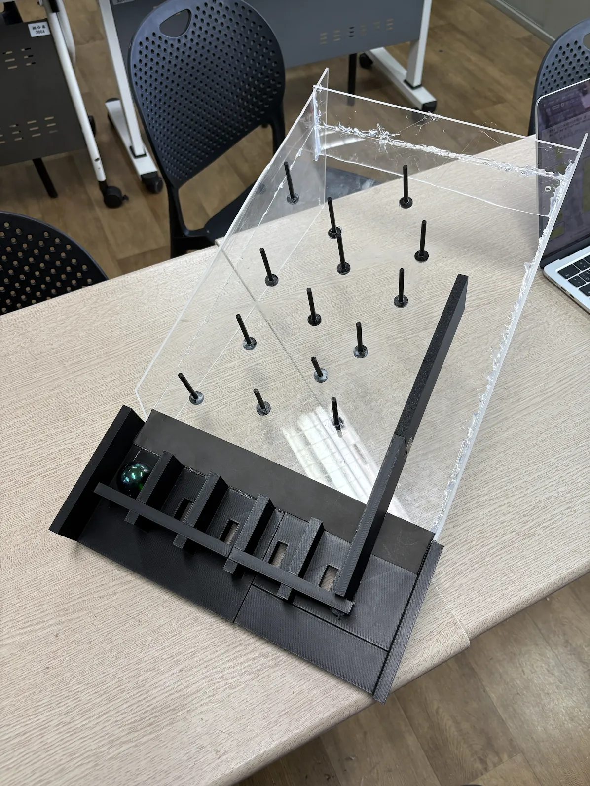
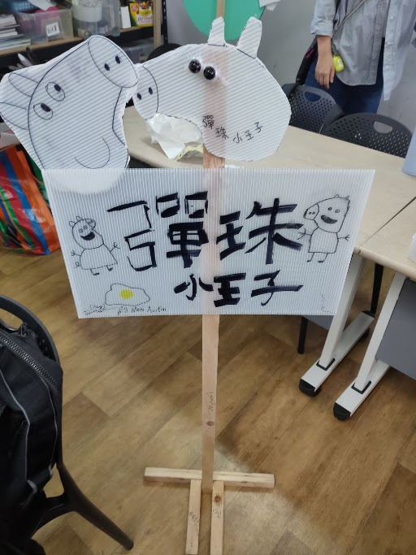
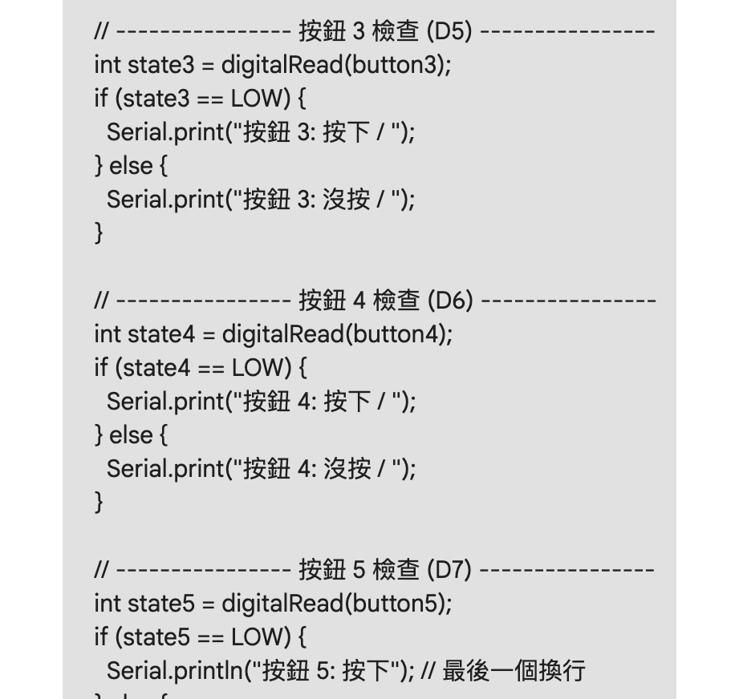
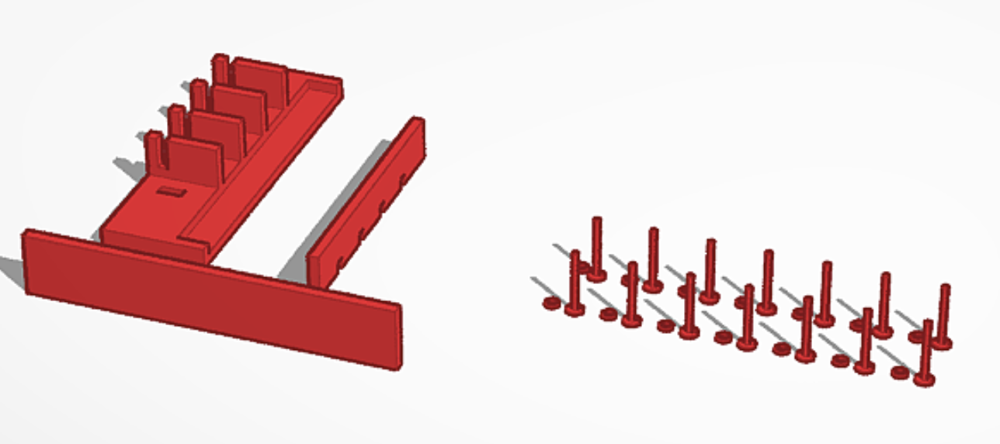
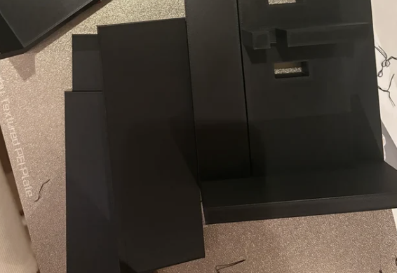
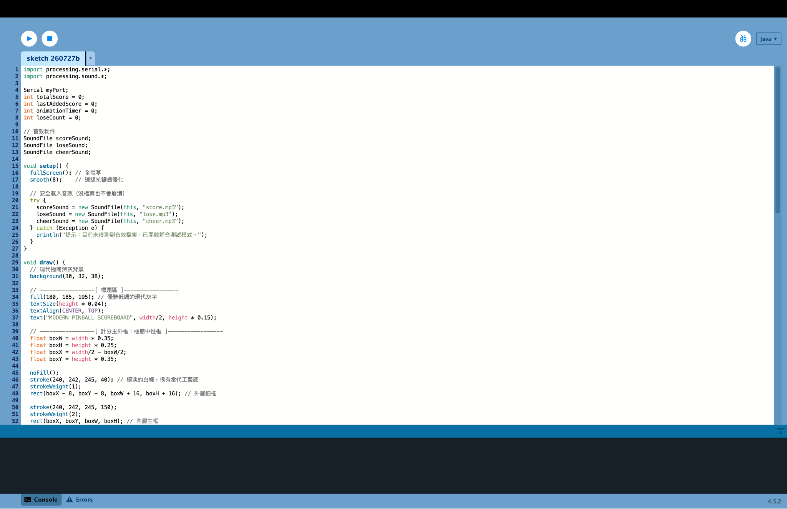
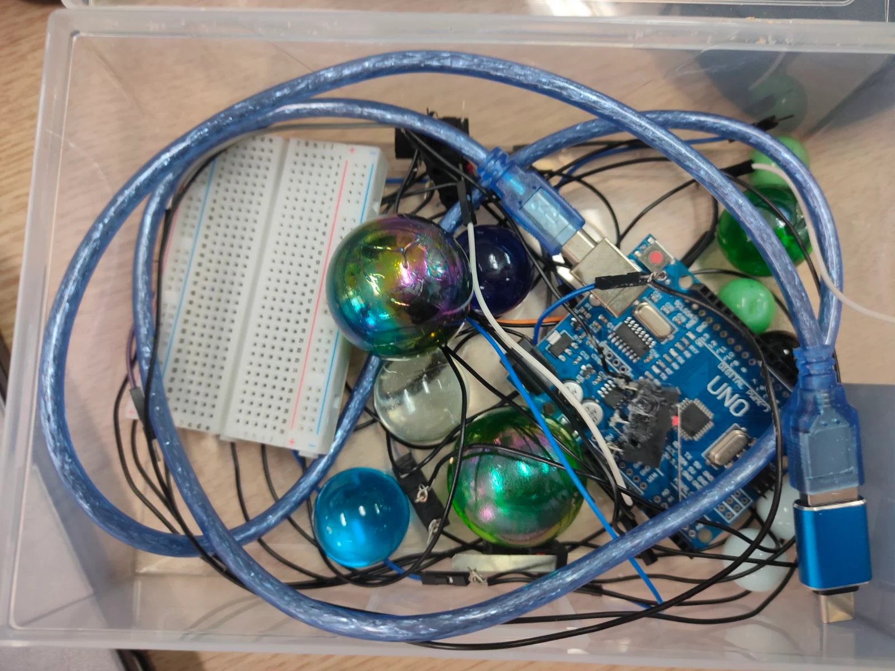

F組
組員：周榆庭、魏右定、王儀儼、周于喆｜組長：周榆庭
一個以夜市常見的彈珠台作為基準而設計的手做彈珠機台
把彈珠從旁邊的彈道發射，並順著障礙物進到洞裏，每個洞都代表不同分。
用微動開關來偵測有沒有彈珠壓上去，然後用Arduino來將程式寫出來
我們預計下學期能把微動開關給接上去然後給它美化讓他比較好看





周榆庭：Processing、3D列印、機台面板

我負責做音效、切割壓克力板、和做一點手作

周于喆：Arduino、微動開關接線、壓克力板製作、招牌製作、3D列印、彈珠機台製作